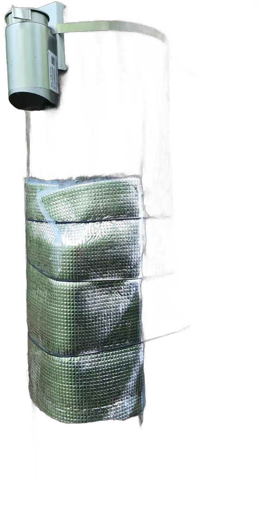
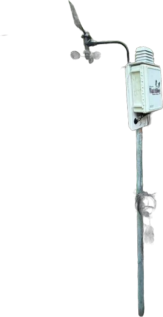
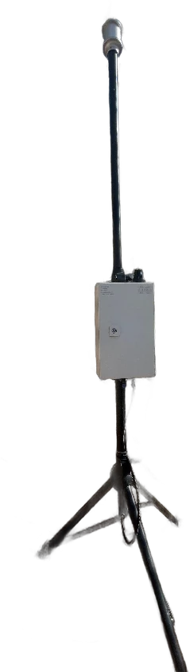

设备布设与数据传输
样地设备采集 → 采集箱汇总 → 4G 组网上传 → 云端 → 网页实时曲线 Field sensors → Data logger → 4G network → Cloud → Live web charts




径向生长仪 / 液流
每 30 分钟
微气象站
环境要素
采集箱
现场记录
数据采集箱
组网 · 数采 · 太阳能 · 4G
数据汇入采集箱
4G 上传
样地设备采集 → 采集箱汇总 → 4G 组网上传 → 云端 → 网页实时曲线 Field sensors → Data logger → 4G network → Cloud → Live web charts


